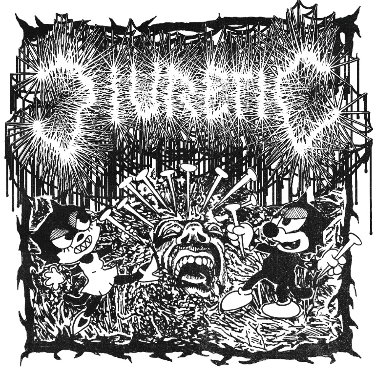
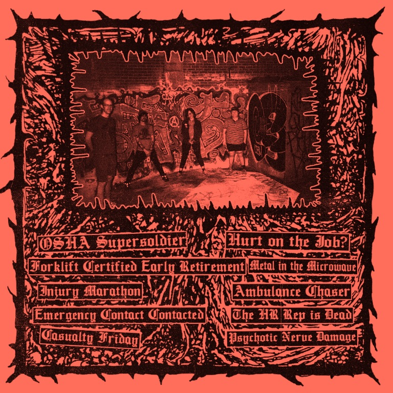
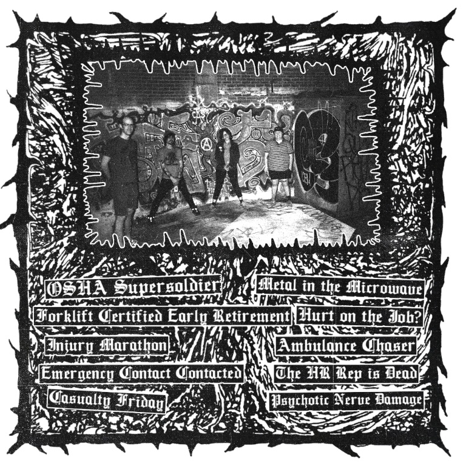
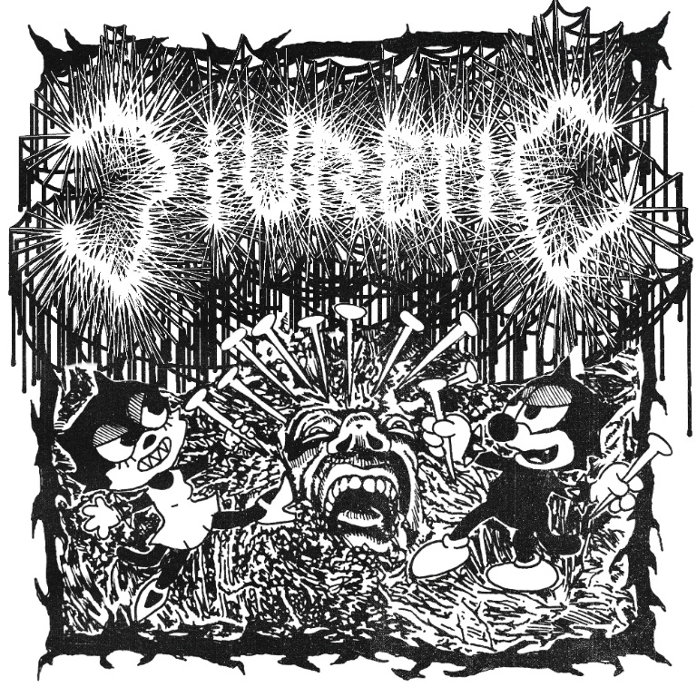
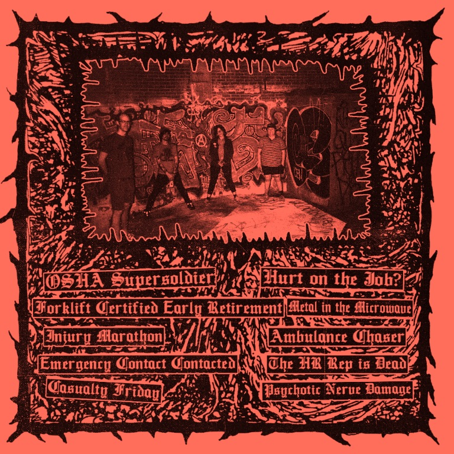
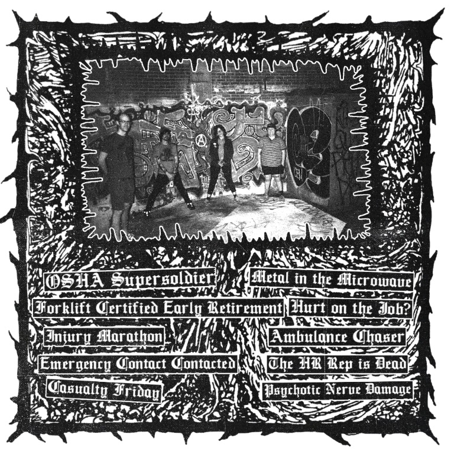

ZERO DAYS WITHOUT INCIDENT "7 OUT ON STRANGE MONO JULY 12th
.jpg) 





About The Record
Diuretic is taking Grindcore to a new level, with unapologetic grit and tongue-in-cheek gore. This Philly four-piece combines an aural attack with dark humor in a quick and dirty package. Inspired by classic influences along the lines of Napalm Death and Terrorizer, Diuretic takes on the flavors of Grindcore that are driving and melodic, with fun riffs to headbang to that filter through the “noise”.
Guitarist Alex moved to Philadelphia from Chicago, looking for a local scene in heavier music. A mutual friend introduced him to Pete, noting that they were both into Grindcore and looking to start a band. One meeting at Nomad Pizza formed the foundations of Diuretic, as the two were ready to jam and bring more musicians into the mix. Pete’s drum skills helped fill a tricky position in the Grindcore genre, and he brought in former bandmate Rose on bass, as Alyssa stepped up on vocals.
Vocalist Alyssa ventures into her first heavy band with Diuretic, taking the creative freedom of lyrics and expressively heavy vocals. Guitarist Alex is rooted in the Grind sound, with origins in Punk, and a grasp on the accessible ethos of the genre, residing in the philosophy that if Punk is characterized by speed, Grind is its greatest exaggeration.
Drummer Pete and Bassist Rose had previously played together in Cavemen (formerly Insane Earth). Rose is an accomplished musician and music educator, known as the guitarist in Sir Babygirl, and always equipped with the energy (plus an extra-long cable) to jump into the pit while playing live. Pete is a lifelong musician, affectionately nicknamed “Twisted” Pete, as the mild-mannered metalhead who listens to the unlistenable.
From writing and recording, to the style of their releases, Diuretic has always kept it DIY. Their first-ever record, Demo, was recorded entirely live in 2021, with the help of their friend Mac Kennedy of Poison Ruïn. The results of the tape were noisy and lo-fi, a tradition they kept for subsequent releases. On their latest EP, once the riffs began to flow, the idea of a workplace incident-themed album came up, and the band ran with it and never turned back. The result is Zero Days Without Incident, an absurd theme that rips hard, recorded with Sasha Stroud at Artifact Audio in New York City. Despite the more formal studio setting, the band keeps the DIY integrity of their sound, always recorded completely live, but this time with a higher production quality bringing them to the next level.
Diuretic is:
| Name | Instrument |
|---|---|
| Peter Crowley | Drums |
| Alex Czyps | Guitar |
| Rose O'Malley | Bass |
| Alyssa Rouke | Vocals |
Selected Lyrics
Metal in the Microwave
Hello, I’m here, I’m him
Call me Fire Guy
You didn’t child proof the microwave in the lunchroom
And now I’m gunna ruin things!
Forklift Certified Early Retirement
Scratch my scabs like a lottery ticket
I have no time to heal
Passed my test now I’m forklift certified
I lift the fork to my mouth every night
Every night I eat shit